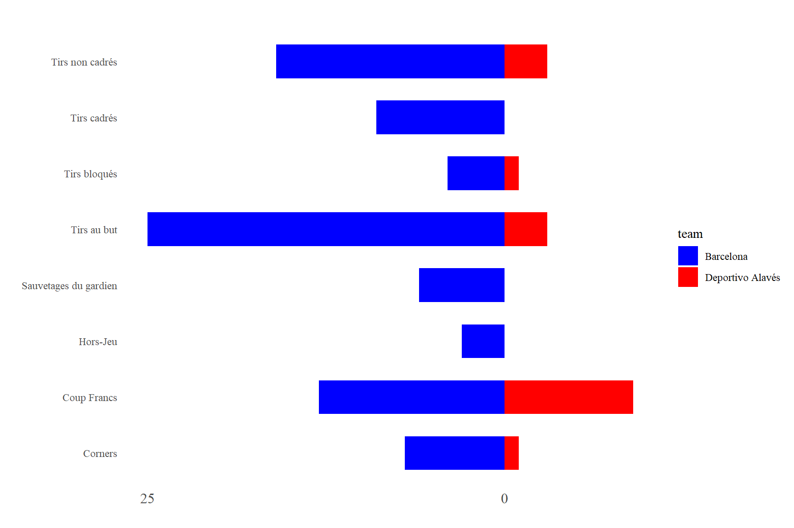

Le guide du package FootballeuR
Documentation pour utiliser le package
Introduction : l’histoire du package
Le package FootballeuR a été développé par Delyan Zergua et Gabriel Bour. Le package permet de répondre à 2 besoins. Le premier consiste à offrir des fonctionnalités pour le traitement et le nettoyage de données de Football. Le second consiste à proposer des visuels dynamiques et interactifs pour représenter ces mêmes données. Ce package a donc été developpé dans le but de fournir des fonctionnalités permettant de traiter des données de football. En effet, ce type de données ont souvent une structure complexe, ce qui rend leur traitement complexe. Le premier enjeu de ce package est de permettre le nettoyage des données pour les rendre exploitable. Le second enjeu est de fournir un exemple d’utilisation de ces données à travers une application Shiny. Tout l’enjeu de cette deuxième partie est de fournir une base pour présenter les données et permettre au l’utilisateur de jouer avec ce type de données en allant plus loin…
Bien sûr ce qui nous motivait à réaliser ce package était notre attrait pour le monde du sport et plus précisement du football. De plus, nous n’avions jamais eu l’occasion de travailler, dans le cadre d’un projet, sur de données de sport.
Jeux de données du package : une structure complexe
A l’origine, nous avons importé des fichiers au format JSON disponible à l’adresse Github suivante : https://github.com/statsbomb/open-data. Ces données sont fournit par StatsBomb qui est une entreprise qui est spécialisé dans la collecte et l’analyse de données de football.
Nous avons ensuite transformé ces jeux de données au format RDA. Ce format evite qu’un fichier prenne de la memoire tant qu’il n’est pas utilisé.
Les jeux de données disponible au sein du package représente chacun l’ensemble des actions/évenements d’un match de football donné. Ainsi, chaque ligne représente un évenement du match (une passe, un but, un sauvetage du gardien…). Pour chaque ligne, nous avons avons des informations telles que le moment de l’evenement (compris entre 0 et 90 minutes), le joueur associé à cet évenement, le type d’évenement, les coordonnées de l’action sur le terrain (disponible sur forme de vecteur en 2 dimensions)… Au total, nous avons pas moins de 100 variables permettant d’apporter des informations sur l’ensemble des actions du match.
Voici un extrait d’un des jeu de données brute que nous avons dans le package FootballeuR :
| period | timestamp | minute | second | type | possession | possession_team | play_pattern | team | duration | tactics | player | position | location | pass | carry | ball_receipt | under_pressure | duel | counterpress | interception | off_camera | ball_recovery | shot | goalkeeper | clearance | block | dribble | foul_committed | foul_won | out | miscontrol | bad_behaviour | substitution |
|---|---|---|---|---|---|---|---|---|---|---|---|---|---|---|---|---|---|---|---|---|---|---|---|---|---|---|---|---|---|---|---|---|---|
| 1 | 00:00:00.000 | 0 | 0 | 35 | 1 | 217 | 1 | 217 | 0.000000 | 442 | NA | NA | NULL | NA | NULL | NA | NA | NA | NA | NA | NA | NA | NA | NULL | NA | NA | NA | NA | NA | NA | NA | NA | NA |
| 1 | 00:00:00.000 | 0 | 0 | 35 | 1 | 217 | 1 | 206 | 0.000000 | 451 | NA | NA | NULL | NA | NULL | NA | NA | NA | NA | NA | NA | NA | NA | NULL | NA | NA | NA | NA | NA | NA | NA | NA | NA |
| 1 | 00:00:00.000 | 0 | 0 | 18 | 1 | 217 | 1 | 217 | 0.000000 | NA | NA | NA | NULL | NA | NULL | NA | NA | NA | NA | NA | NA | NA | NA | NULL | NA | NA | NA | NA | NA | NA | NA | NA | NA |
| 1 | 00:00:00.000 | 0 | 0 | 18 | 1 | 217 | 1 | 206 | 0.000000 | NA | NA | NA | NULL | NA | NULL | NA | NA | NA | NA | NA | NA | NA | NA | NULL | NA | NA | NA | NA | NA | NA | NA | NA | NA |
| 1 | 00:00:00.575 | 0 | 0 | 30 | 2 | 206 | 9 | 206 | 2.015669 | NA | 6581 | 16 | 61.0, 40.1 | 6855 | NULL | NA | NA | NA | NA | NA | NA | NA | NA | NULL | NA | NA | NA | NA | NA | NA | NA | NA | NA |
| 1 | 00:00:02.591 | 0 | 2 | 42 | 2 | 206 | 9 | 206 | NA | NA | 6855 | 5 | 33.8, 28.0 | NA | NULL | NA | NA | NA | NA | NA | NA | NA | NA | NULL | NA | NA | NA | NA | NA | NA | NA | NA | NA |
Si nous avions choisi de constuire notre projet à partir de ces données, c’est parce qu’elle sont une structure très complexe qui nécessite une compréhension et un pré-traitement important. Il y a donc un réel travail à réaliser en amont. Ensuite, une fois que ce travail assez long a été réaliser, les possibilités de représenter visuellement les données sont infinies tant la quantité d’informations portée par les données est importante.
La structure de nos jeux de données est la suivante :
'data.frame': 2 obs. of 7 variables: $ timestamp : chr "00:00:00.000" "00:00:00.000" $ minute : int 0 0 $ second : int 0 0 $ type :'data.frame': 2 obs. of 2 variables: ..$ id : int 35 35 ..$ name: chr "Starting XI" "Starting XI" $ possession : int 1 1 $ possession_team:'data.frame': 2 obs. of 2 variables: ..$ id : int 217 217 ..$ name: chr "Barcelona" "Barcelona" $ tactics :'data.frame': 2 obs. of 2 variables: ..$ formation: int 442 451 ..$ lineup :List of 2 .. ..$ :'data.frame': 11 obs. of 3 variables: .. .. ..$ player :'data.frame': 11 obs. of 2 variables: .. .. .. ..$ id : int 20055 6374 5213 5492 5211 5203 5470 6379 5477 5246 ... .. .. .. ..$ name: chr "Marc-André ter Stegen" "Nélson Cabral Semedo" "Gerard Piqué Bernabéu" "Samuel Yves Umtiti" ... .. .. ..$ position :'data.frame': 11 obs. of 2 variables: .. .. .. ..$ id : int 1 2 3 5 6 9 11 12 16 22 ... .. .. .. ..$ name: chr "Goalkeeper" "Right Back" "Right Center Back" "Left Center Back" ... .. .. ..$ jersey_number: int 1 2 3 23 18 5 4 20 11 9 ... .. ..$ :'data.frame': 11 obs. of 3 variables: .. .. ..$ player :'data.frame': 11 obs. of 2 variables: .. .. .. ..$ id : int 6629 6618 6615 6855 6612 6839 6617 6626 6632 6581 ... .. .. .. ..$ name: chr "Fernando Pacheco Flores" "Martín Aguirregabiria Padilla" "Víctor Laguardia Cisneros" "Guillermo Alfonso Maripán Loaysa" ... .. .. ..$ position :'data.frame': 11 obs. of 2 variables: .. .. .. ..$ id : int 1 2 3 5 6 10 12 13 15 16 ... .. .. .. ..$ name: chr "Goalkeeper" "Right Back" "Right Center Back" "Left Center Back" ... .. .. ..$ jersey_number: int 1 21 5 6 3 16 11 22 19 23 ...
Dans cet exemple, nous avons seulement séléctionné les 2 premières lignes et 6 colonnes différentes du jeu de données brutes pour se rendre compte de la complexité de la structure. La structure est très complexe, nous avons notre dataframe, qui contient lui même des listes, d’autres dataframes… Ce qui rend l’exploitable de ce dataframe très complexe. Prenons l’exemple de la colonne “tactics”. Cette colonne est en fait un dataframe de 2 colonnes. Sa première colonne est de type integer mais sa seconde colonne est une liste. Dans cette liste, chaque élément est représenté par un dataframe contenant 3 variables. Ses imprications qui peuvent parfois atteindre 4 niveaux compliquent le traitement des jeux de données du package.
Avant-propos
Obtenir le package
R : Directement dans R avec la commande install.packages(“FootballeuR”) pour l’installer en local. Puis la commande library(FootballeuR) pour le charger dans l’environnement de travail. Il est également possible de l’installer dans l’onglet Package > Installer depuis > Package Archive File puis importer le fichier d’archive du package au format .tar.gz.
GITHUB : La structure ainsi que l’ensemble des fonctionnalités du package sont disponibles à l’adresse suivante : https://github.com/DelyanZ/FootballeuR. Le package peut être chargé avec la commande suivante : devtools::install_github(“DelyanZ/FootballeuR”)
Contrôle de la qualité du package
Plusieurs fonctionnalités dans R permettent de contrôler la qualité d’un package R. En analysant l’ensemble de ses éléments pour voir s’ils respectent les normes, si ils ne déclanchent pas d’erreurs…
Dans le cadre du développement de notre package, nous utilisions la commande devtools : : check() à chaque grosse modification. Cette commande verifie si le package coche toutes les cases pour être considéré ainsi. Il précise et fait bien la distinction entre les erreurs (empêche l’utilisation du package) et les avertissements.
Nous utilisions également la fonction devtools : : load_all() qui permet de charger toutes les fonctions développées dans le package. C’est un bon moyen de voir si les fonctions sont correctements implantés et qu’il n’y pas d’erreurs.
Developpement du package FootballeuR
Dans cette partie, nous déroulons les étapes de la contruction de notre package FootballeuR.
Les indispensables du package
Pour que l’on puisse considéré un travail comme un package sur R, certain pré-requis sont nécessaires. Il y a tout d’abors, la présence d’un fichier DESCRIPTION dans lequel repose toutes les informations du packages ainsi que les dépendances à d’autres packages.
Package: FootballeuR
Title: Provide tools to make vizualisation with football's data
Version: 0.0.0.9000
Authors@R:
c(person(given = "Delyan",
family = "Zergua",
role = c("aut", "cre"),
email = "zerguadelyan@gmail.com"),
person(given = "Gabriel",
family = "Bour",
role = "aut",
email = "bourgabriel@gmail.com"))
Description: This package provides functions to clean data football to make it presentable for vizualisation
License: `use_mit_license()`, `use_gpl3_license()` or friends to pick a
license
Encoding: UTF-8
Roxygen: list(markdown = TRUE)
RoxygenNote: 7.2.3
Depends:
data.table,
DT,
extrafont,
ggplot2,
ggridges,
ggsoccer,
gridExtra,
hms,
htmltools,
jsonlite,
scales,
shiny,
shinythemes,
plotly,
ggimage
Depends:
R (>= 2.10)
lazyData: true
Dans le fichier DESCRIPTION, nous retrouvons le titre et la description du package, les auteurs. Mais aussi d’autres informations annexes comme le type d’encodage, la license… Enfin, il y a aussi la liste des packages dont notre package FootballeuR dépend. Nous avons également ajouté la mention : lazyData: true. Cette mention signifie que les données sont au format rda eţ qu’elles peuvent être utilisées de façon “paresseuse”. Cela indique que les données sont stockées dans la mémoire uniquement lorsqu’elles sont appélées. Les lazyData permettent alors de faire de gros gains en terme d’espace de stockage et permettent donc d’augmenter les performances.
Un autre pré-requis lors de la distribution d’un package est de fournir un “manuel”, une documentation pour l’ensemble des fonctions créées. En guise de documentaire, nous proposons un répertoire nommé man . Il contient autant de fichers qu’il y a de fonctions dans le package. Chaque fichier est au format Rd (pour R documentation) et ils donnent des informations sur les fonctions, sur leur utilité, un ou des exemples d’utilisation…
Fonctionnalités interréssantes
Dans cette section, nous présenterons l’ensemble des fonctionnalités de notre package. Par fonctionnalité, nous entendons l’ensemble des fonctions que nous avons produite dans le paclage FootballeuR. Nous distingons 2 types de fonctionnalités : pour le traitement des données et pour la visualisation des données. Commençons par présenter les fonctions permettent de traîter nos données décrivant des matchs de football.
Fonctions pour le traitement des données
Dans le package FootballeuR, nous avons développé un certain nombre de fonctions permettant de nettoyer nos données pour les adaptés à nos demandes et ainsi facilité nos analyses des données. Nous devoilerons les fonctions dans l’ordre dans lequel nous les avons construites.
La fonction supCol_by_Names
La première fonctionnalité à laquelle nous avons pensé pour effectuer le prétraitement des données de notre package est de pouvoir supprimer de façon automatique les variables qui ne nous interesse pas. Etant donné que tous les jeu de données disponible ont la même structure, il est facile de mettre en place une fonction qui supprime les colonnes indésirables selon leur nom pour chaque fichier. Le plus compliqué dans le developpement de cette fonction était de mettre le place un code qui permet de parcourir toutes les colonnes du dataframe. Puisque les dataframe sur lesquels nous travaillons ont une structure plutôt complexe. Ils sont en effet imbriqué ce qui peut compliqué parfois le parcours de l’ensemble des colonnes. (METTRE UN SCHÉMA ou un truc que explique ce que peut contenir le dataframe imbriqué)
La fonction change_type
Cette fonction est la deuxième que nous avons développé. Elle a pour but de changer les types de colonnes d’un dataframe pris en entrée si necéssaire. En effet, le plus souvent, certains changement de type de variable sont nécessaires pour pouvoir mettre en place les anaylses de de données que nous souhaitons. Pour permettre de diffiérencier les variables qualitivatives qui sont codé comme des quantitatives et inversement.
A travers la fonction change_type, nous souhaitions développer une fonction qui parcours l’ensemble d’un dataframe imbriqué et qui change les types des variables selon des critères prédéfinis. Par exemple, la règle suivante a été définie : Si la colonne est par défaut de type “integer” et que le nombre de modalités et supérieur à 10, nous appliquons le type “numeric”.
La fonction updateNameFile
Cette fonction permet de modifier le nom d’un jeu de données pour le rendre plus explicite. Le nom que l’on donne au jeu de données les le même pour tous les jeux de données présent dans notre package. Ce nom n’est pas défini au hasard, il est issue des données du jeu de données en question. Le résultat est de la forme “Equipe 1 vs Equipe 2”. Cette fonction a été developpé pour répondre à un besoin de l’application Shiny, notamment pour permettre à l’utilisateur de savoir quel match il selectionne parmi tous les matchs disponible dans les données du package.
La fonction missing_data
La fonction missing_data se situe dans le script val_manquantes.R, cette fonction a pour but de compter le nombre de valeurs manquantes pour chaque colonne du dataframe passé en entrée. Le comptage des valeurs manquantes n’est pas difficile en soit dans un dataframe, mais dans notre cas, tout l’enjeu était de pouvoir parcourir l’ensemble des colonnes du dataframe imbriqués avec sa structure complexe pour ensuite pouvoir compter les valeurs manquantes pour chaque colonne.
Fonctions pour la visualisation des données
Après avoir développé des fonctions permettant de traiter nos données dans le package FootballeuR, nous avons développé des fonctions permettant de faire de la visualisation sur ces même données. Dans cette section, nous présentons l’ensemble des ces fonctionnalités.
La fonction get_lineup
La fonction get_lineup permet de donner les compositions de départ des 2 équipes (pour un jeu de données). Les compositions sont affichées sur un terrain de football avec l’équipe à domicile qui porte les maillots rouges et l’équipe à l’extérieur les maillots bleus. Sur chaque maillot nous retrouvons aussi le numéro du joueur. Chaque joueur est positionné sur le terrain en fonction de la formation de départ de son équipe et du poste qu’il occupe. Pour determiner où doit être posotionné chaque joueur, nous avons mis en place une fonction que nous avons appelé formation.
Finallement voici le rendu final de la fonction get_lineup :
La fonction utilise les libraries ggplot2, ggsoccer (pour le terrain) et ggimage (pour importer et utiliser les maillots rouges et bleus comme des points).
La fonction funnel_plot
Cette fonction permet de réaliser un funnel plot, ce type de graphique permet de comparer plusieurs statistiques différentes avec des barres. L’avantage du funnel plot est qu’il est très visuel et permet d’accéder très rapidement à l’information. Dans notre cas, nous utilisons le funnel plot pour donner les statistiques du match (tirs, tirs cadrés, corner, hors-jeu…). Pour chaque statistique présente, nous comparons les 2 équipes.
Notre fonction funnel_plot est construite à partir de la librairie ggplot2, plus précisement avec la fonctionnalité geom_bar() de cette même librairie. Voici un exemple de repésentation de la fonction :

La fonction get_score
Comme son nom l’indique, cette fonction a pour but de récupérer le score du match. La valeure de sortie est un tableau de données qui présente autant de lignes que de but qu’il y a eu dans le match. Pour chaque ligne nous avons des informations tel que le buteur, la minute du match où le but a été marqué… Voici un exemple pourŕdes jeu de données parmi ceux du package FootballeuR :
| Temps | Equipe | Joueur |
|---|---|---|
| 63 | Barcelona | Lionel Andrés Messi Cuccittini |
| 82 | Barcelona | Philippe Coutinho Correia |
| 91 | Barcelona | Lionel Andrés Messi Cuccittini |
La fonction shot_pitch
Cette première fonction à pour but de représenter sur un terrain de football l’ensemble des tirs d’un match donné. Une fois le match séléctionné, un terrain de 120 par 80 s’affiche et l’ensemble des tirs du match (selon leur coordonnées s’affichent). On distingue bien les tirs des 2 équipes avec des couleurs différentes. Pour construire cette fonction, nous avons utilisé la librarie ggplot2 ainsi que la librarie ggsoccer pour obtenir le terrain de football vide. Nous réalisons également un travail de filtrage du jeu de données brut pour extraire uniquement les N tirs du match que nous spécifions ensuite dans le graphique à afficher.
Voici un exemple de l’utilisation de cette fonction :
Ici, nous affichons l’ensemble les tirs du match de la première à la dernière minute. Dans notre application Shiny, l’utilisateur a la possibilité de modifier l’intervalle de temps dans lequel on souhaite prendre les tirs en compte. De plus, l’utilisateur peut aussi cliquer sur les points du graphique pour obtenir plus d’informations (tireur, issue du tir, minute du tir…).
La fonction radar_plot
La fonction radar_plot produit des graphiques en forme de toiles d’araignées pour représenter visuellement la contribution des attaquants dans le match. Les attaquants sont évalués sur 7 statistiques qui permettent de représenter leur contribution totale. La fonction va afficher graphique en toiles d’araignées par attaquants du match. Voici un exemple d’utilisation de la fonction :
La fonction heatmap_player
La dernière fonction réalisée pour nos visuels construit une heatmap sur un terrain de football pour représenter l’activité d’un joueur du match. Son activité dans le match est construite à partir de l’ensemble de ses positions tout au long du match. Pour mettre en place ce graphique, nous utilisons toujours la librairie ggplot2 ainsi que la librarie ggsoccer. Voici un exemple d’utilisation de cette fonction :
Dans l’exemple ci-dessus, nous avons afficher la heatmap du joueur Lionel Messi qui traduit son activité pendant le match.
Fonctions annexes du package FootballeuR
La fonction load_packages
C’est une fonction annexe qui n’est pas vraiment essentielle dans notre cas. Nous ne l’utilisons pas dans notre application Shiny développé au sein du package. Le but de cette fonction est simplement d’installer plusieurs packages en local en même temps en spécifiant tous les noms des packages à installer en entrée dans une liste. La fonction va ensuite regarder les packages parmi ceux passé en entrée qui sont déjà installés en local. Seulement les packages qui ne sont pas installés vont l’être. Enfin, la fonction va se charger du chargement de tous les packages passés en entrée (fonction library).
La fonction .onLoad
La fonction .onLoad permet d’ajouter un nouveau chemin aux chemins auquels peut avoir accès notre application Shiny. Elle nous a notamment servi pour ajouter le chemin vers le repertoire contenant les images que nous utilisons dans l’application Shiny. Il y a entre autre le logo et d’autres images que nous avons intégré dans l’application.
Les données du packages
Une fois toutes les fonctions construites, nous avons décidé d’integrer des données. Elles permettent d’utiliser les fonctions et seront aussi essentielles dans le developpement de l’application Shiny au sein du package (voir section suivante).
A l’origine, nous avions 3200 jeux de données au format JSON. Chaque jeu de données décrit l’ensemble des actions/évenements qui se sont déroulé de la 1ère à la 90ème minute d’un match de Football donnée. Les matchs sont issues du monde professionnel et proviennent de différents pays en Europe. Dans ces fichiers de données, chaque ligne correspondait à une action qui s’est déroulée pendant le monde. Dans chque fichier le nombre de ligne total oscillait entre 3000 et 4000. Le nombre de colonnes quand à lui dépasse les 100 valeurs.
La première idée avec ces données était de toutes les intégrer dans notre package. Cependant, nous avons rapidement remarqué que la quantité importante de données jouait sur la rapidité. De plus, il aurait été difficile d’integrer de telles données dans l’application Shiny. En effet, il aurait fallu appeler et stocker dans l’environnement globale l’ensemble des fichiers au moment de lancer l’application Shiny. L’application aurait alors mis beaucoup de temps à se lancer.
Le deuxième idée était de changer le type des fichiers de données en les passant de JSON à Rda. Nous avons rapidement constaté que ce fût une bonne idée. En effet, cette technique nous a permis d’augmenter nos performances. Les vérifications du package (commande check) ainsi que l’installation du package se réalisaient nettement plus rapidement.
Finalement nous avons choisi d’integrer seulement 50 fichiers de données parmi les 3200. Ces 50 fichiers sont bien évidemment au format Rda.
Developpement de l’application Shiny
Pour developper l’application Shiny dans un package il a fallu mettre le fichier app.R dans le repertoire R/. Lorsqu’une application Shiny est developpée lors d’un package, on retrouve (dans le fichier app.R) l’objet ui, l’objet server ainsi que la fonction ShinyApp(ui,server,…) qui lance l’application. Dans notre cas, nous avons seulement integré les 3 composantes définies ci-dessus dans une seule fonction appelée app. C’est essentiel lorsque l’on integre une application Shiny dans un package R. L’application peut ensuite être appelé avec la fonction suivante : FootballeuR : : app()shinyApp(ui, server, …)
La partie UI
La partie Interface Utilisateur (IU) contient tout les éléments propres à l’interface graphique. Dans cette partie, nous avons travaillé sur le visuel pour rendre l’application agréable pour le lecteur mais aussi dynamique avec la possibilité de “jouer” avec des graphiques en appliquant des filtres. La structure globale est inclut dans une navbarPage(). Comme son nom l’indique elle permet de créer des pages avec des barres de navigations. Ainsi, à l’interieur de cette fonction, nous utilisons des tabPanel() pour chaque onglet d’application. Nous en avons 4 au total. Le premier onglet s’intitule “Match”, il permet de présenter le match séléctionné avec les compositions d’équipes et les statistiques du match. Le deuxième onglet est “Visualisation”, il intergre pricipalement des graphiques permettant d’en apprendre plus sur le match séléctionné. Le troisième onglet s’intitule “Data Events”, il affiche simplement les données brutes que nous utilisons pour contruire nos graphiques. Enfin, le quatrième et dernier onglet s’intitule “Compétition” et référence le jeu de données qui contient des infomations sur chacune des compétitions que l’on peut retrouver parmi les matchs. De plus, dans chaque onglet de l’application, nous avons implémenté la même liste déroulante qui permet de choisir un jeu de données (et donc un match) sur lequelle nous voulons afficher les visuelles.
La partie Server
La partie serveur de l’application Shiny gère les calculs en réponse aux interactions de l’utilisateur, traitant les requêtes provenant de l’interface utilisateur (UI) et mettant à jour dynamiquement les éléments de l’interface en conséquence. C’est dans cette partie que nous utilisons nos fonctions construites dans le package FootballeuR pour nettoyer les données puis les utiliser pour réaliser des visuels.
Problèmes rencontrés tout au long du projet
Dans cette section, nous détaillons tous les problèmes que nous avons rencontrés tout au long du projet. A chaque fois, nous présenterons les solutions ou les alternatives à ces problèmes, lorsqu’il y en a.
Difficultés pour importer des packages
Un problème qui nous est arrivé à de nombreuses reprises, c’est le problème d’installation de packages. En effet, nous avons sur nos machines les dernières versions de R qui se supportent pas certains packages trop anciens. Nous avons finalement trouver des alternatives à chaque fois en utilisant d’autres packages à la place ou en mettant à jour les packages avec leurs dernières versions.
Difficultés pour préciser les packages externes dans notre package
Notre package FootballeuR, comme tout package assez complexe, dépend d’autres packages externes pour bien fonctionner. Nous savons qu’il est possible de lister dans le fichier DESCRIPTION tous les noms de ces packages externes. Nous listons ces packages dans le paramètres Imports. Mais une fois listé, nous ne comprenions pas pouquoi il fallait ensuite charger les packages manuellement avec la fonction library pour pouvoir les utiliser dans notre package. Finalement, nous avons trouvé une solution à ce problème. Tout simplement en changeant le paramètres Imports par Depends. En effet, nous nous sommes rendu compte à ce moment là que le paramètre Imports se contentait d’installer les packages mais ne les chargeait pas. Tandis que le paramètre Depends les installent et les chargent.
Difficultés pour la migration des données au format
Il y avait notamment le problème de la migration des données au format rda vers une base de données “paresseuse” (lazyload DB). Cette migration favorise une utlisation economique de la mémoire pour l’utilisateur. En effet, lorsque joue sur notre application, les données ne sont stocké dans la mémoire seulement quand elles sont appelées. Pour migrer ces données, il fallait simplement utiliser la fonction use_data du package usethis. Cependant, cette fonction ne fonctionnait pas directement sur nos données.
Gérer les dépendances du package FootballeuR
Nous avons aussi rencontré une erreur d’installation du package FootballeuR à cause d’erreurs provenant des dépendances de ce package. En effet, ce package dépend d’autres packages qui
Integrer l’application Shiny dans le package FootballeuR
Lun de nos principaux problèmes était la difficulté à integrer notre application Shiny dans notre package. D’après nos recherches sur internet, c’est une pratique qui n’est pas rare bien qu’elle ne soit tout de même pas très commune. A l’origine, l’interêt d’integrer directement l’application dans le package était que cela facilitait l’expérience utilisateur. En effet, avec cette integration, l’utilisateur aurait à disposition l’ensemble des fonctions, l’application Shiny ainsi que l’ensemble des données pour pouvoir jouer avec les fonctions et l’application.
Integrer les images de l’application Shiny dans le package R
L’intégration d’images dans l’application Shiny elle même intégré dans le package R fût un vrai problème pour nous. Dans le cas général, quand l’application Shiny n’est pas un package, on retrouve un repertoire “www” qui se trouve dans le même repertoire que le fichier .R qui heberge l’application. Dans ce repertoire “www”, on retrouve l’ensemble des images peu importe leur format. Dans le package, nous avons alors essayé d’integrer ce même repertoire “www” dans le repertoire “R” de notre package, sans succès.
Finalement la solution à ce problème fût de créer une fonction .onLoad qui permet d’ajouter un chemin (que l’on spécifira) dans les chemins auquels notre application Shiny aura accès.
Utiliser les données paresseuses (lazyData) du package dans l’application Shiny
A l’origine, nous avons 3200 fichiers au format .rda disponible pour construire notre application Shiny, Chaque fichiers est associé à un match, pour lequel nous avons des données sur tous les évenements. Notre objectif était de pouvoir les utiliser tous ces fichiers comme données paresseusses (lazyData) dans l’application. Dans le package, nous avons retenu uniquement les 50 premiers fichiers de données. Dans l’application Shiny finale, nous avons seulement intégré 5 fichiers d’entre eux. Nous nous sommes limité à ce faible nombre car nous importons manuellement, 1 par 1, les fichiers de données du package FootballeuR lors du lancement de l’application. Ainsi, il devient vite inadapté de charger manuellement chaque fichiers lorsqu’il y en a beaucoup plus. Autant au niveau de la pénibilité de l’écrire que de l’impact sur la performance et la mémoire.
Nous n’avons donc pas réussi à utiliser les données de façon paresseuses (lazy) dans notre application Shiny.
Ce que ce projet nous a apporté
Dans la section précédente, nous avons détaillé nos problèmes rencontrés. Beaucoup d’entre-eux nous ont appris enormément de choses sur la construction de packages, d’applications Shiny… Mais aussi sur les bonnes pratiques à mettre en place pour devenir un developpeur confirmé. Voyons dans cette partie en détail les principaux enseignements de ce projet.
Créer des packages assez complexe
Bien évidemment, en premier lieu, ce projet, nous a appris à développer des packages dans R. Avant cela, nous avions comme beaucoup des apprioris autour du développement de packages. Nous pensions que s’était reservé à une élite parmi les développeurs R. De plus, nous sous estimions l’importante que peuvent avoir les packages dans R au court d’un projet. Le developpement de notre package nous a aussi appris à structurer notre code. En effet, à l’origine, comme tout utilisateur “itermédiaire” de R, le style de code n’est réellement la premier préocupation lorsqu’on se lance dans un projet. Mais, à mesure que l’on avance dans le projet, on se rend compte de l’importance de la structuration du code. Le développement de package permet d’améliorer sa structuration du code en R, puisque tout package impose une structure bien particulière tant au niveau de l’arborescence qu’au niveau des lignes de codes, car le plus souvent il a pour but d’être distribué pour être réutilisé par d’autres utilisateurs.
Ce projet, nous aura donc appris que les packages R sont plutôt faciles à développer, mais aussi de comprendre l’importance de developper des packages en R notamment lorsque l’on se lance dans un projet plus ou moins long. Dans notre cas, le package FootballeuR est plutôt pas mal fourni avec notamment une application Shiny, des images, plus d’une dizaine de fonctions… Le développement de l’ensemble de ces fonctionnalités nous aura causé de nombreux problèmes. Ces problèmes nous aurons pousser à aller chercher comment les resoudre mais aussi dans le même temps à comprendre un maximum de choses sur les packages en R.
Developper une application Shiny
Au fur et à mesure que nous cherchons a integrer des fonctionnalités complexes dans l’application, nous nous sommes rendu compte qu’il y a une infinité de packages qui apportent des extensions pour améliorer l’application Shiny sur tous les points (interfaces, dynamismes, performances…). Nous voyons encore aujourd’hui dans notre application Shiny de nombreuses possibilités d’amélioration, tant sur le plan de l’interface visuelle que sur la partie serveur.
Avec ce projet, nous avons réellement appris à coder une application Shiny en utilisant les bonnes pratiques pour pouvoir structurer le code et ainsi rendre lisible le code. Mais aussi avoir une application facilitant la reproductibilité et où les possibilité d’améliorations sont nombreuses.